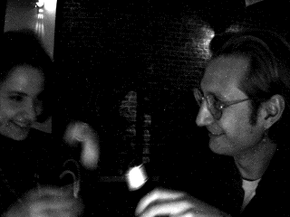
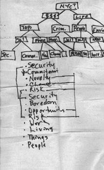
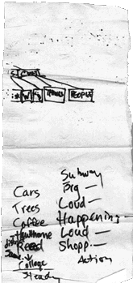

|
 |
A mutual friend at Alex's work gives Alex's email address to Alison. That very night, circa 10 pm, she surprises him with a talk request. (Excerpts here.) He is distractable and paranoid, in the middle of chasing a long-standing bug; she is in her normal state of mind: overworked, overtired, overconfident and over the top. They get along like old ward mates from the shell shock clinic.
Subject: rosy-fingered dawn To: ahell@inch.com Date: Fri, 19 May 1995 09:59:15 -0400 (EDT) Reply-to: alex@earthweb.com Alison - Nice talking you last night. Sorry I couldn't talk longer; the good news is I squashed that bug, hopefully once and for all, around 4 a.m. It's been plaguing me for weeks, stalking me in my dreams, making me nervous, whispering nasty things about me to my friends. Now I can go for a walk in the park in unconflicted seasonal rapture. Or is that just sleep deprivation? So I was thinking. I can't remember the last time I went on a date (that is, a Date date), and I've *never* had a blind one, but Lord knows I need to meet more New Yorkers and if I swallow my blase and butterflies it occurs to me that it would probably be a lot of fun. Considering that your talking the initiative (so to speak) shows you're at least thinking positive, I don't see why we need Diane to chaperone. I don't have any plans this weekend. Do you? We could meet somewhere geeky like the @ cafe and hang out for an hour or two. Okay, time to go shake off the cobwebs, have a cup of coffee and read Eightball. Alex http://www.cs.columbia.edu/~chaffee/
Incriminating Photos
Movie! I finally
got the QuickTime movie to upload! If you've got the bandwidth for a 1-meg
file, you can see us drink and smile for the camera. No need to adjust your TV
set -- it's that blurry cause we're so loaded.
|
|
"Beer." "Good." |
|
|
|
|
Trois Couleurs: Noir |
|

Note: "Stygian Alison" does not follow the letter of the law for selecting double-dactylic proper names; epithets are only acceptable if the personage is known to the world under that name; e.g. William the Conqueror or Stan "The Man" Meusiel. But this is just a pseudonym anyway, and her true name, known only to a select few, is indeed dactylic in veritas.Subject: Double-dactylically To: ahell@inch.com Date: Thu, 25 May 1995 20:12:16 -0400 (EDT) Bcc: evs@cs.columbia.edu (Eric Siegel) Alison - You may have noticed a look of surprise briefly cross my face while I was reading your wallet. It happened when I saw your full name for the first time. This surprised me not via some narrative function -- e.g., my first dog was the victim of a hit and run; as the Chevy Caprice with mismatched fenders rolled away in a cloud of dust I squinted through my tears but all I could make out was the vanity plate -- but because your full name is a double dactyl.[ The explication of double dactyls has been excerpted and expanded; you can learn all about them right here. ]This is all by way of saying that this morning I awoke, I stared at my ceiling, I remembered that your name qualifies you for the rare honor of being memorialized in poetic form. Thirty minutes later I had the first draft. Ten minutes ago, after a constructive conversation with my abovementioned uncle ("It's not... *clever*.") I rewrote it, and the second draft meets with his, and I hope your, strict lyrical standards. Without further ado, I give you...Full SpectrumHecubus, Shmecubus
Stygian Alison
Flees from a dizzying
Visual blitz."I've had enough of this
Polychromatically
varying scenery:
*Brown* is the shits."
- ADCNote that "X is the shits" means "X is good" (an idiom with which my uncle was unfamiliar). Note also that the title sucks and if you can think of a better one please let me know. Later... - Alex "Je ne suis qu'un pauvre poete Americain" Chaffee